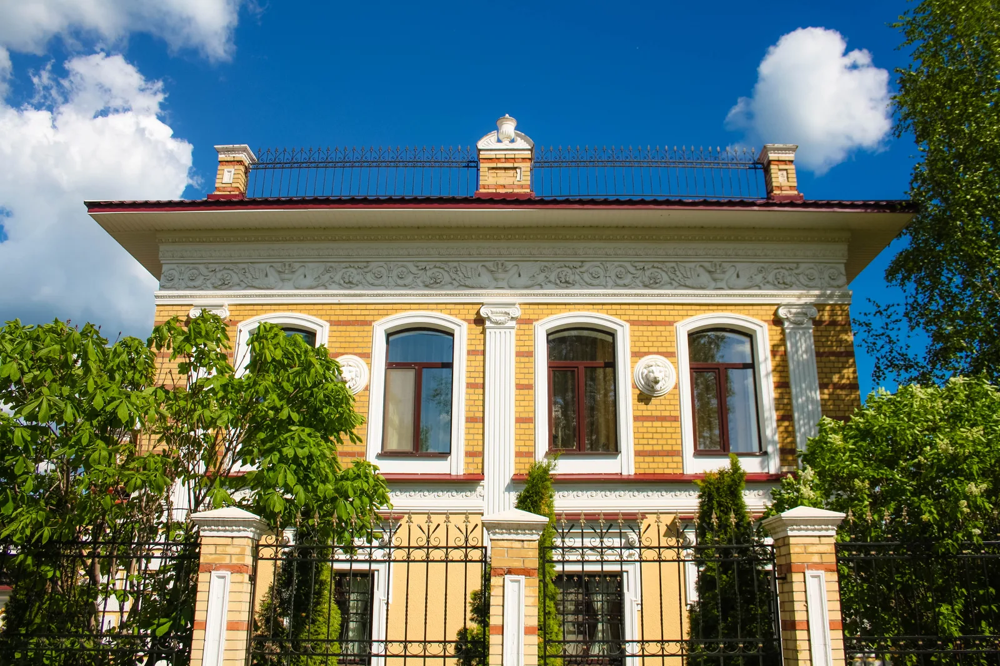
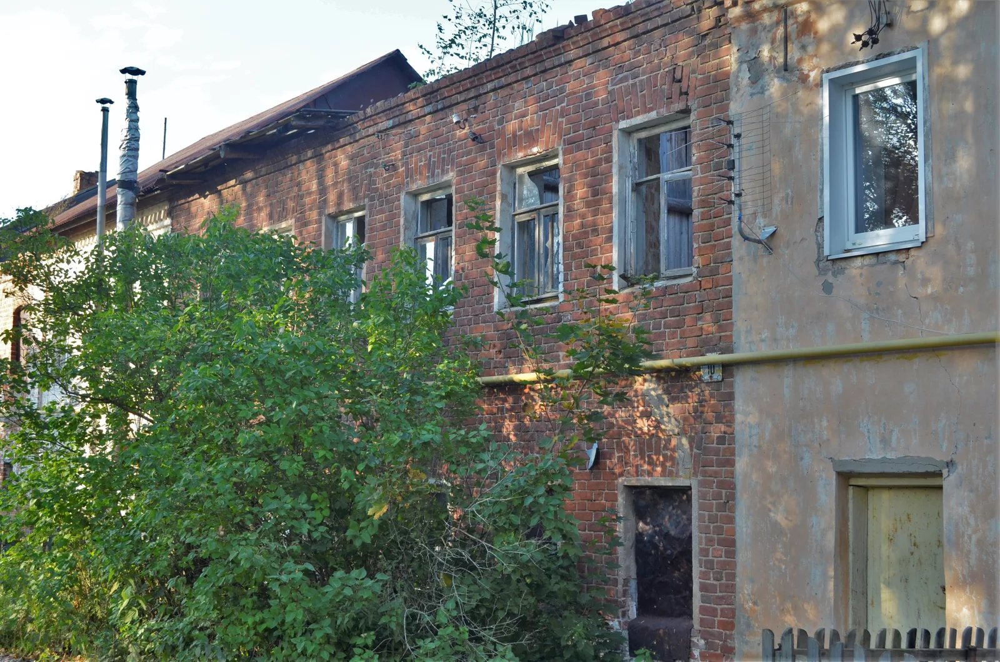
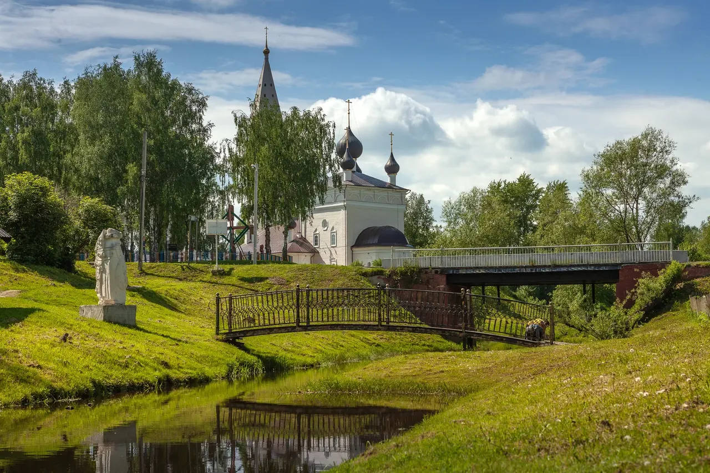
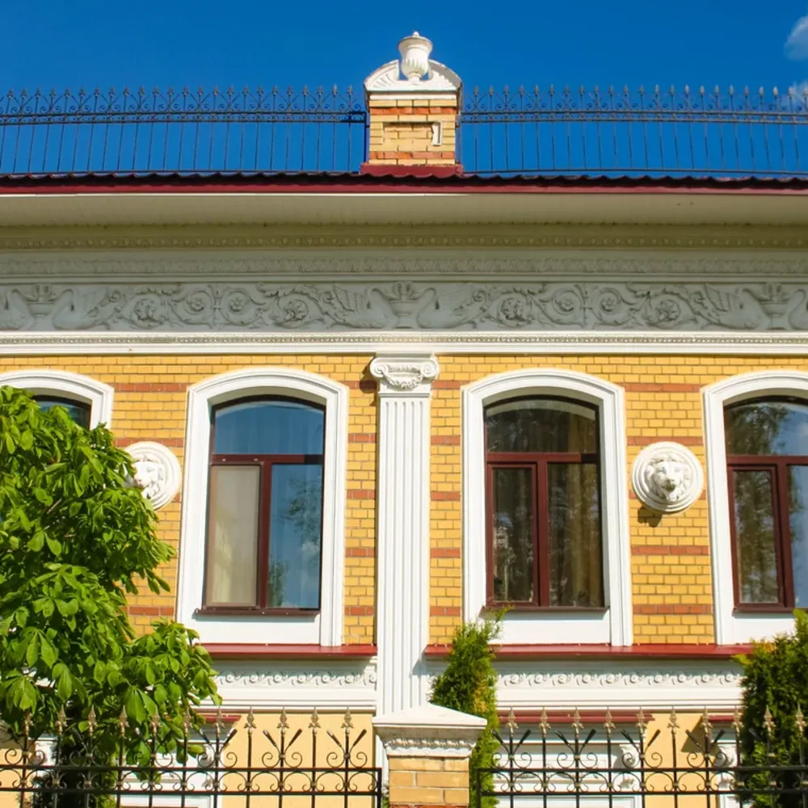
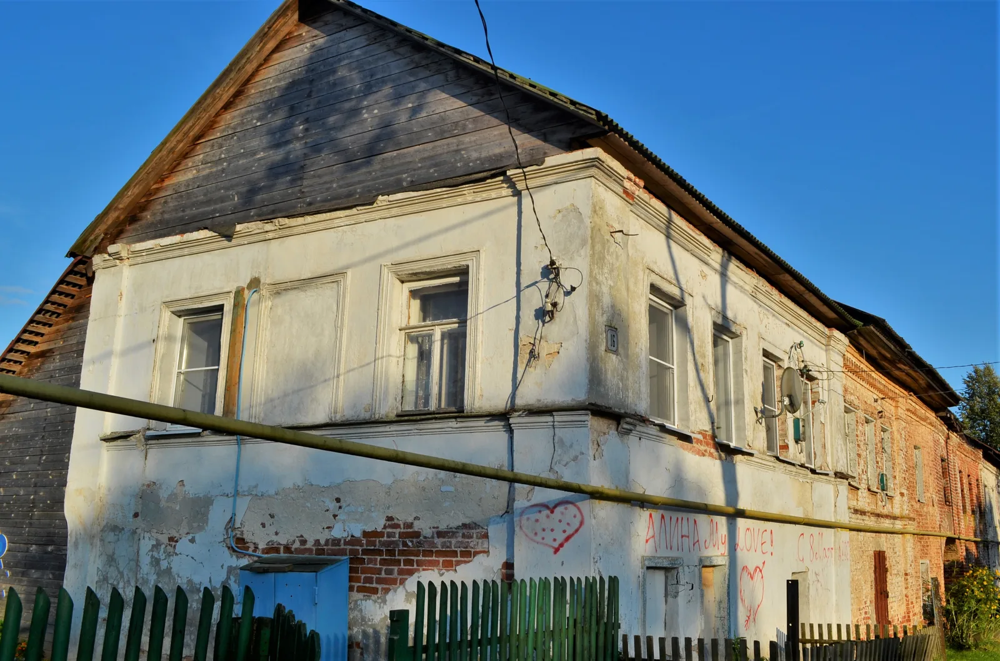
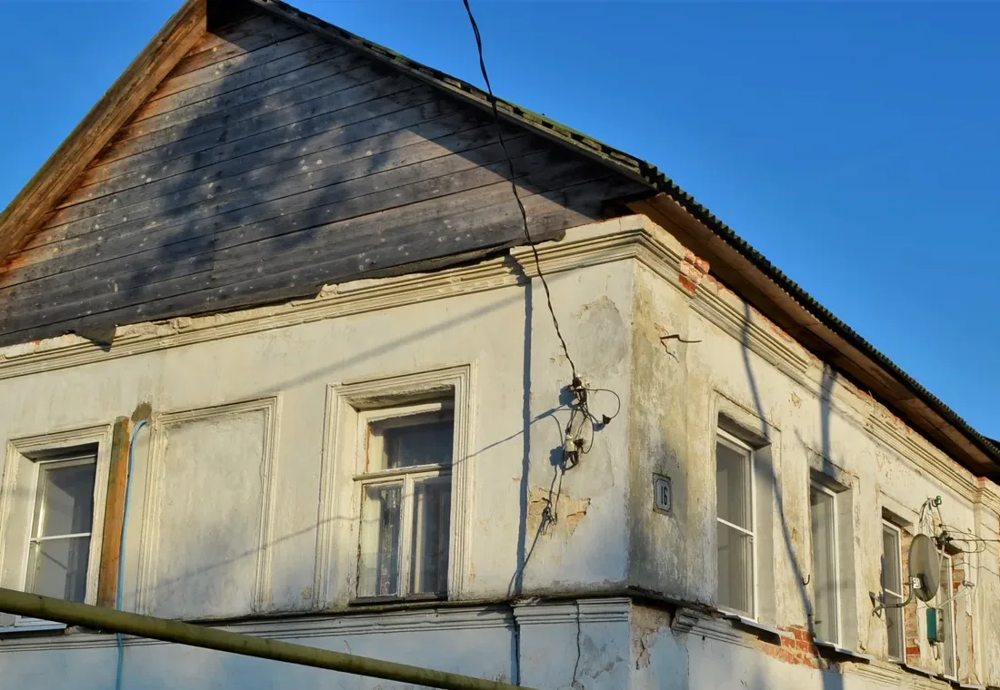
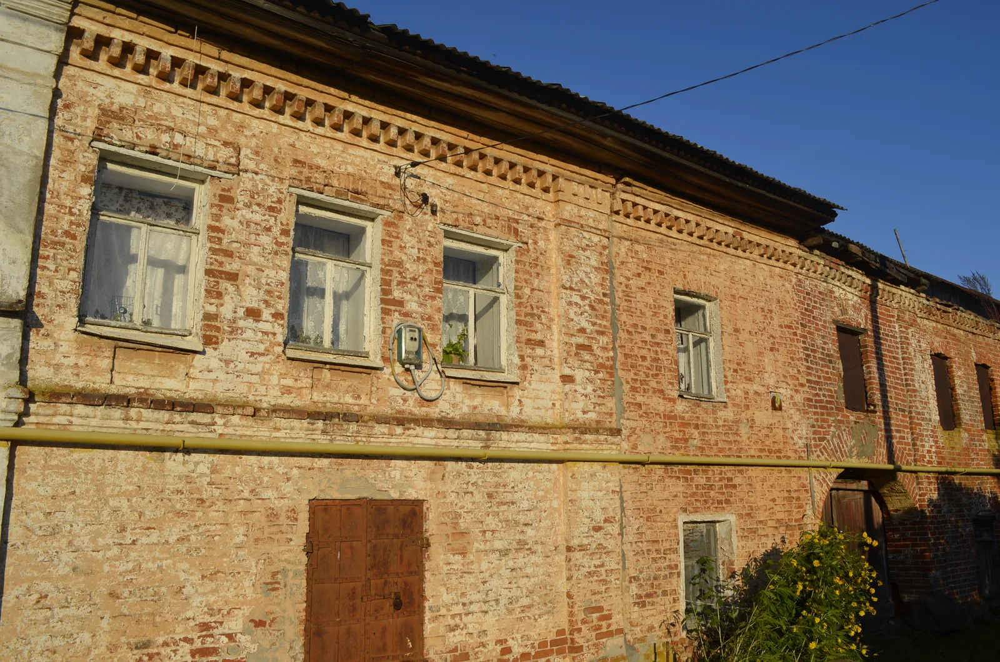
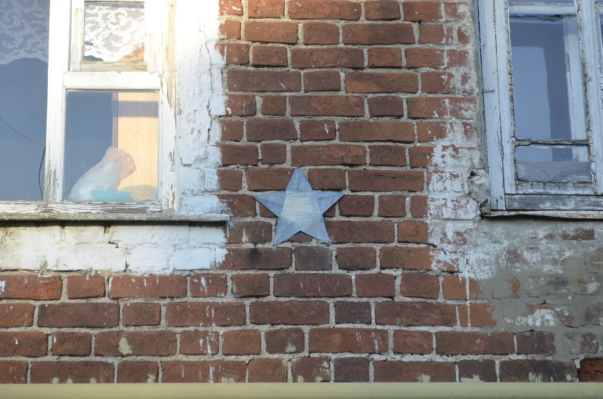
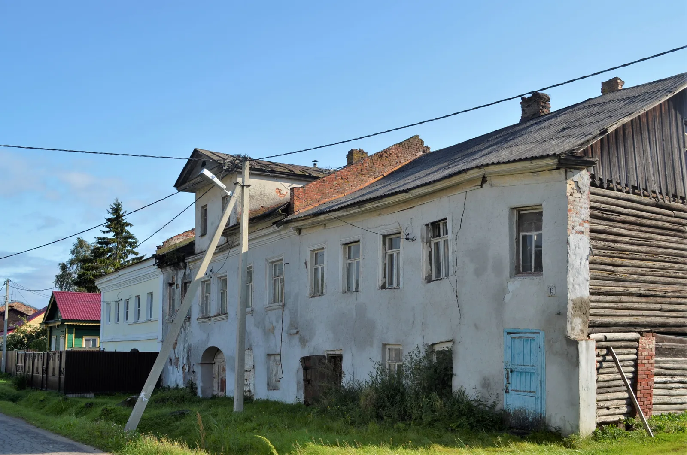
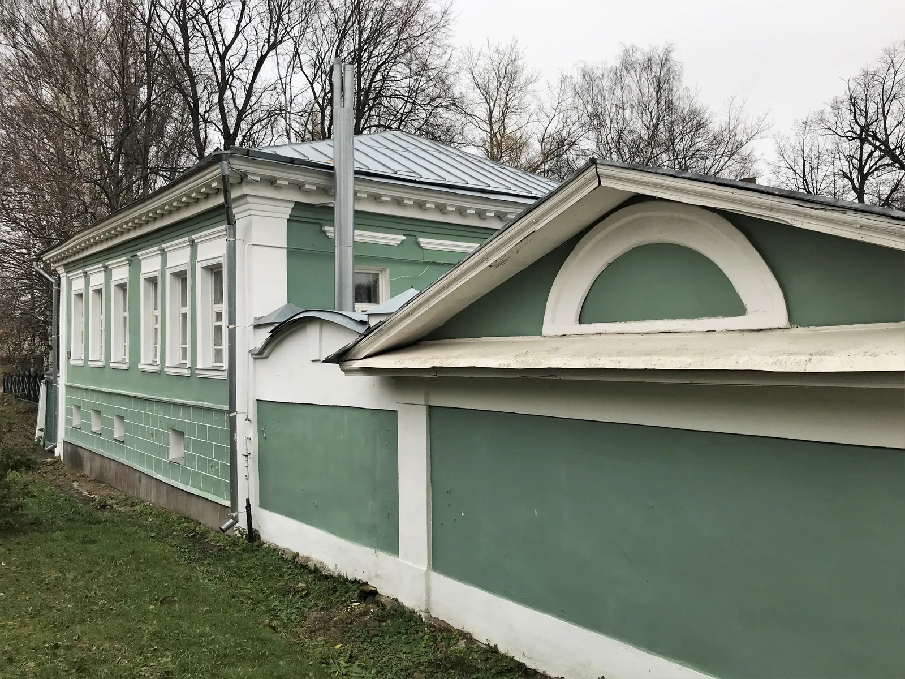

Это не ролик с обещанной длительностью, а короткий управляемый
фотомонтаж. Он ставит парадокс; доказательство ты соберёшь в
архитектурной лаборатории ниже.



С близкого расстояния память цепляется за львиные головы.
Временный режим: синтез речи выполняет браузер; постоянный
аудиофайл не создан. Полный текст доступен ниже.
Полная расшифровка
Вятское легко запомнить по львам на фасаде. Но отойди на шаг:
знаменитый дом становится частью улицы. Посмотри на другой
фасад — тот же городской характер возникает уже без львов.
Ещё дальше улица входит в дорогу, храмы и сельский ландшафт.
Парадокс поставлен; теперь проверь его четырьмя связанными
масштабами.
Аудиогид · 53 секунды
Иди от линии улицы к руке мастера
Четыре остановки без архитектурного словаря
Сначала почувствуй плотность улицы. Потом различи дом, карниз и
только в конце — лепную деталь.
53 секунды · синтезированный голос; полный текст — рядом.
Прочитать полную расшифровку
Первая остановка — край села. Не ищи украшения. Посмотри,
как дома держатся вдоль дороги, а храм становится общей
вертикалью.
Вторая — улица. Подойди туда, где соседние фасады почти
продолжают друг друга. Арочный проезд не разрывает линию, а
открывает путь во двор.
Третья — дом. Теперь смотри сверху вниз: карниз завершает
стену, пилястры подчёркивают вертикальное членение фасада, окна
задают ритм. Дом обращён
к улице парадным лицом.
Четвёртая — деталь. Фестон, медальон, розетка или львиная
маска показывают руку лепщика. Но не называй весь декор гипсовым
и не приписывай его известному отходнику без документа.
Вывод. Мастера возвращали в село строительные навыки.
На странице мы сопоставляем этот подтверждённый опыт с парадными
фасадами и плотной линией улицы — как музейное прочтение, а не
доказанную причину устройства всего села.
Архитектурная лаборатория
Что придаёт улице городской характер?
В управляемом режиме пройди все четыре масштаба по порядку. В
свободном — вернись к любому кадру и сравни схемы.
Село: дома, дорога и храм читаются как связанная среда.
Шаг 1 из 4 · пройдено 0
1 · Село
Сначала увидь целое
На общем виде декор ещё не читается: архитектура начинается со
связи домов, дороги, храма и ландшафта.
Это учебная схема последовательности, не геодезический план:
общий вид Вятского → уличный фронт → дом № 16 на Клюшниково →
карниз и проёмы того же дома.
На улице — непрерывную линию фасадов и арочные проезды.
На доме — карниз, вертикали и ритм проёмов.
В детали — след ремесла лепщика без вымышленного авторства.
Увидеть на месте · четыре остановки
Улица Клюшниково: четыре остановки
Это самостоятельное задание наблюдения, а не проверенная полевая
экскурсия: точное время и доступность тротуаров нужно подтвердить на
месте. Официальная пешая экскурсия комплекса существует отдельно.
Старт: открой официальную карту и найди улицу Клюшниково; встань так, чтобы видеть несколько фасадов сразу.
Дом № 10: сравни ритм окон и завершение стены карнизом.
Дома № 14–16: найди вертикали, арочный проезд и парадное лицо улицы.
Дом № 18: подойди к рельефу, затем обернись и снова увидь целую улицу.
Листай жестом, кнопками или стрелками. Подпись указывает, что
именно увидеть; фотография остаётся отдельным документом.
1 из 10
Дом со львамиРельеф работает внутри всей фасадной композиции.Фото Blooming soul, CC BY-SA 4.0.

Львиная маскаПроизводная деталь помогает увидеть объём лепнины.Фото Blooming soul, CC BY-SA 4.0; кадрирование
музея.
Дом внутри улицыС расстояния деталь уступает место линии застройки.Фото Чуринъ, CC BY-SA 4.0.

Ритм проёмовОкна, карниз и вертикали собираются в парадное лицо.Фото Виталий Барсов, CC BY-SA 4.0.

Карниз и вертикалиКадрирование показывает, как фасад получает верх и
опоры.Фото Виталий Барсов, CC BY-SA 4.0; кадрирование
музея.
Дом № 10Другой фасад сохраняет тот же язык порядка и рельефа.Фото Виталий Барсов, CC BY-SA 4.0.

Дом № 14Сравни ширину простенков и завершение стены.Фото Виталий Барсов, CC BY-SA 4.0.

Дом № 18Декор меняется, но фасад продолжает разговор с
улицей.Фото Виталий Барсов, CC BY-SA 4.0.

Давыдковская улицаГородской приём не привязан к одному знаменитому
дому.Фото Виталий Барсов, CC BY-SA 4.0.

Усадьба на ПервомайскойЕщё один способ связать дом, ограду и уличный фронт.Фото Виталий Барсов, CC BY-SA 4.0.
Паспорта четырёх фасадов улицы Клюшниково
Кадр
Адрес
Датировка и охрана
Что видно о состоянии
Источник
Дом № 10
ул. Клюшниково, 10
Индивидуальная датировка и запись ОКН не установлены в источниках выпуска.
Современный документальный вид; доля подлинного и восстановленного не установлена.
Российское досье говорит о высокой сохранности ансамбля в целом,
но не заменяет паспорта каждого дома. Поэтому неизвестные поля не
заполнены предположениями.
Отходник возвращается домой
Городской опыт возвращался вместе с мастерами
Вятское было селом отходников. Российское досье Вятского,
опубликованное в предварительном списке ЮНЕСКО, связывает его с каменщиками,
штукатурами и лепщиками и отмечает сохранившуюся лепную работу.
Лепная деталь, организация фасада и линия улицы работают на
разных расстояниях. Книжная подпись к снимку 1984 года фиксирует
родственную практику в Некрасовском районе. В книге промысел
связывается с отходниками бывшего Даниловского уезда, но точное
место съёмки дома Саловых в подписи не указано.
1984Книжная подпись дом Саловых≠Современное Вятское другой объект
Страница 171984
Дом лепщиков Саловых Некрасовский район
Книжное свидетельство · не ВятскоеПодпись фиксирует гипсовую лепнину на одной избе
«Лепнина на крестьянской избе. Дом лепщиков Саловых.
Некрасовский район. Фото 1984 года».
А. А. Маслова, Ю. В. Маслов. «Традиции Ярославского края.
Дом и быт. Семейные обычаи». Рыбинск: Медиарост, 2013,
с. 17. Изображение не публикуется: для вывода здесь достаточно
проверяемого текста подписи.
Карточка издания и фрагмент.
Современное ВятскоеЛепная деталь на фасаде
Свидетельства нельзя сливать в одно доказательство: книжная
подпись относится к региональному промыслу, а этот кадр — к
сохранившемуся декору Вятского. Материал и автор конкретного
фасада не приписываются.
Пётр Телушкин — подтверждённый уроженец Вятского и известный
отходник-кровельщик. Но это не доказывает его авторство лепных
фасадов. Дом Саловых также не назван домом Вятского: книжная
подпись указывает только Некрасовский район.
Документальный голос
Навык уезжал с человеком и возвращался домой
Книга Масловых описывает лепной промысел как занятие отходников.
Мастера уходили на заработки, осваивали работу вне деревни, а
затем приносили навык в сельский дом. Уехал. Выучился. Вернулся.
Сохранность и реставрация
Современный кадр — уже после работ, начатых в 2006 году
Культура.РФ сообщает о восстановлении 32 памятников. Российское
досье отмечает высокую сохранность планировки и большей части
отделки; доля подлинного и восстановленного в каждом
показанном фасаде на этой странице отдельно не установлена.
Россия и мир
Похожий декор — разные принципы среды
В историческом центре Амстердама городской фронт складывается из
узких участков и непрерывного ряда кирпичных фасадов вдоль каналов —
этот принцип показывает
атлас городского наследия ЮНЕСКО. В Вятском улица остаётся сельской дорогой между отдельными
усадьбами, но общий фронт фасадов, арочные проезды и лепной декор
придают ей городской характер. Сходство результата не означает
прямого заимствования: здесь важно сравнивать устройство улицы, а не
один орнамент.
ВятскоеОтдельные усадьбы и проезды обращены к сельской дороге; общий фронт возникает из согласованного положения фасадов.АмстердамУзкие участки образуют почти непрерывную кирпичную стену вдоль канала.
Условные учебные схемы, не обмеры и не карты. Они сравнивают один
масштаб — границу улицы — по описанию российского досье Вятского и
Urban Heritage Atlas ЮНЕСКО.
Что доказано, а что нет
Лепнина — да. «Вся гипсовая» — не доказано
Факт
Более 50 памятников
Российское досье, опубликованное в предварительном списке ЮНЕСКО,
описывает более 50 памятников историко-градостроительного комплекса
XVI–XIX веков.
Наблюдение
Фасад к фасаду
Плотная линия застройки и арочные проезды названы признаками
городского характера среды.
Факт
Штукатуры и лепщики
Официальные источники связывают Вятское с отходничеством и
возвращением строительных навыков.
Не смешиваем
Дом Саловых — не Вятское
Фото 1984 года подтверждает гипсовую лепнину на крестьянской
избе в Некрасовском районе, но не материал и авторство фасадов
Вятского.
Фотографии: Wikimedia Commons; автор и лицензия указаны у
каждого кадра. Точные карточки исходников, изменения и SHA-256
собраны в
медиапаспорте выпуска.
Текст Википедии не использован.
{kind=link}
{kind=link}
{kind=link}
{kind=link}
{kind=link}